For older people and people with disability, AT is used to support independent living, mobility and communication and can assist people with physical or cognitive disabilities in learning and communication, participating in work and/or social environments, and achieving independence and improved quality of life.
Assistive technology for older people and people with disability
Select each of the headings to learn more about AT for older people and people with disability. When you have finished, select again to close the section.
Aids for daily living
These help people perform daily functions.
Examples include: modified eating utensils, dressing aids, adapted personal hygiene aids, pencil holders, page turners, and adapted books.
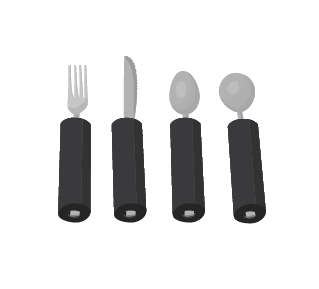 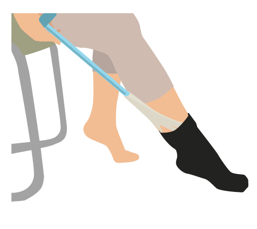
Sensory aids
These enhance people’s ability to see, hear and communicate.
Examples include: magnifiers, large print screens, hearing aids, visual alerting systems, braille and speech/telecommunication output devices.
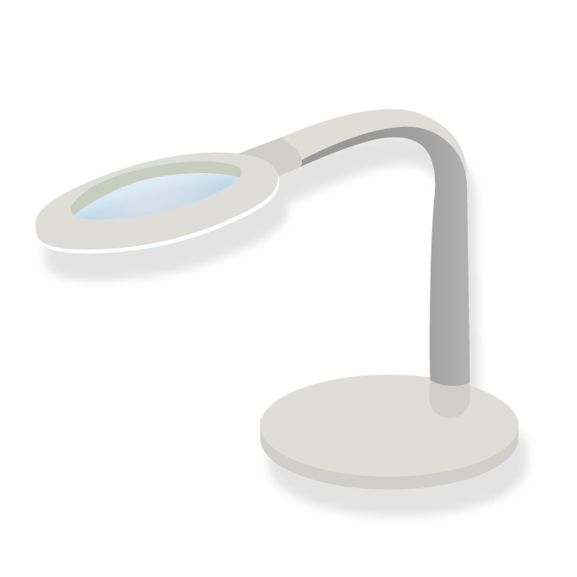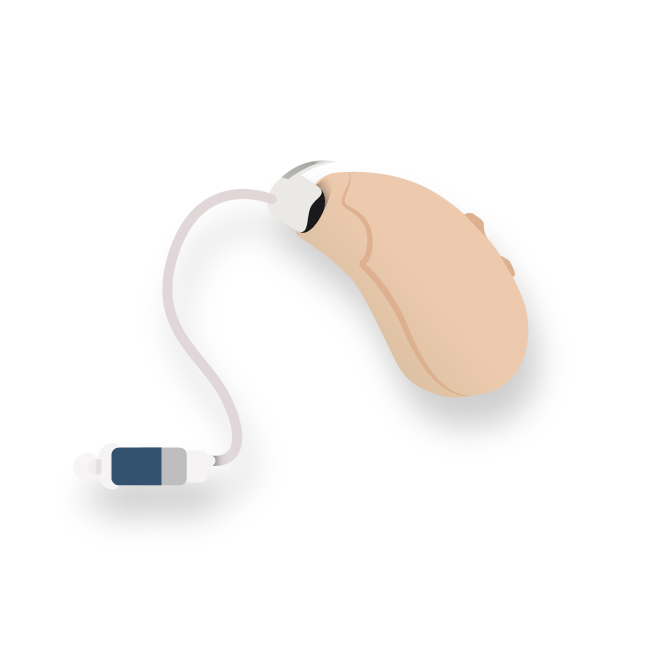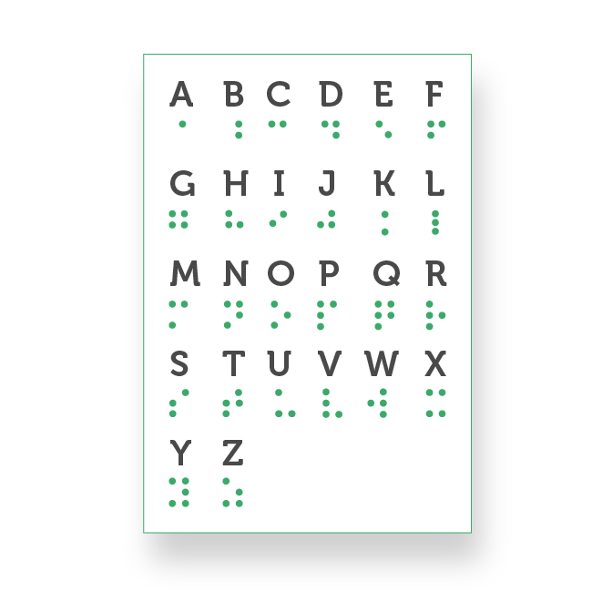
Body support aids
These help to position people more comfortably.
Examples include: adapted seating, cushions, standing tables, positioning belts, braces, cushions, and wedges.
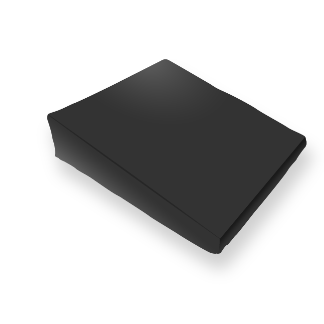
Mobility aids
These help people move around.
Examples include: electric or manual wheelchairs, modifications of vehicles for travel, scooters, crutches, canes, and walkers.
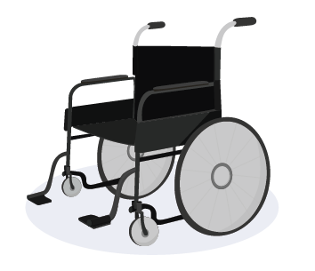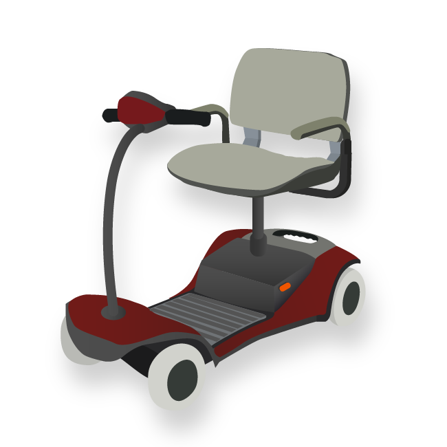 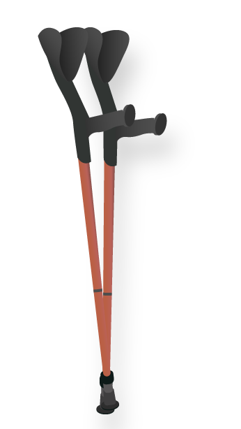
Recreational aids
These help people participate in social, cultural and sports events.
Examples include: audio description for movies, adaptive controls for video games, adaptive fishing rods, cuffs for grasping paddles/racquets and seating systems for boats.
Home/workplace modifications
These help people manoeuvre better and accomplish more in their homes and workplaces.
Structural adaptations that remove or reduce physical barriers include ramps, lifts, bathroom changes, automatic door openers and expanded doorways.
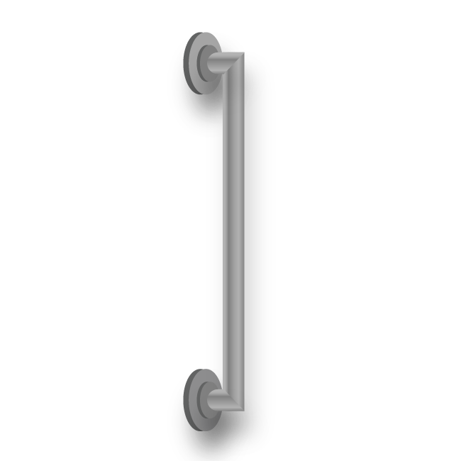
Alternative and augmented communication devices
These help people with speech that is difficult to understand or low vocal volume to communicate better.
Examples include: speech generating devices, voice amplification aids, and communication software.
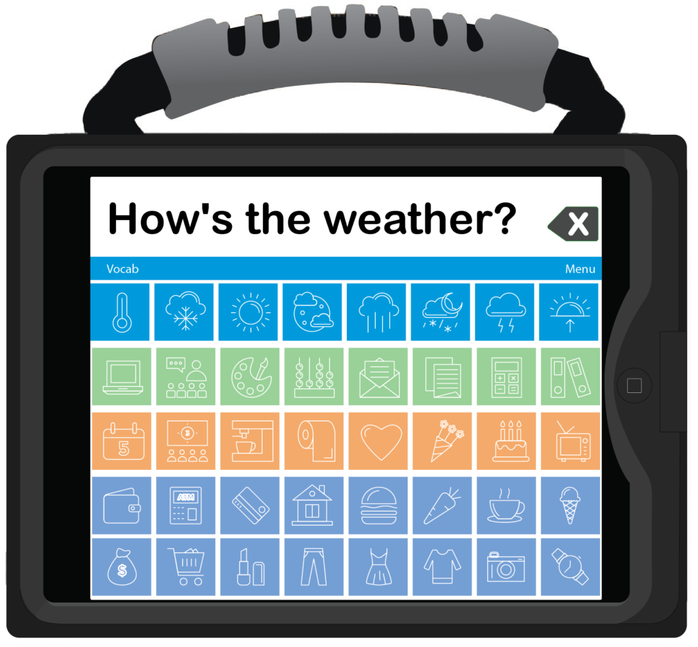
Prosthetics and orthotics
These replace or augment body parts.
Examples include artificial limbs or other orthotic aids, such as splits or braces.
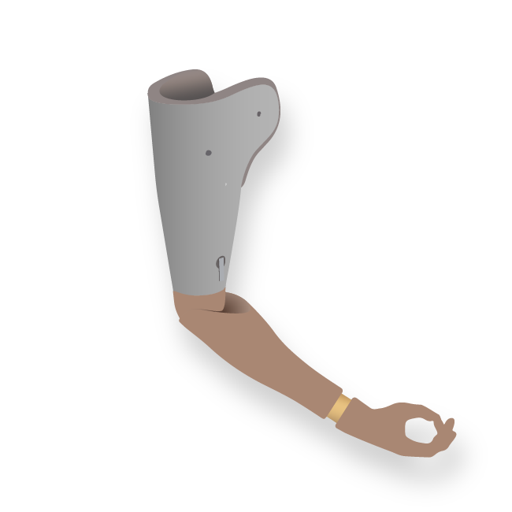 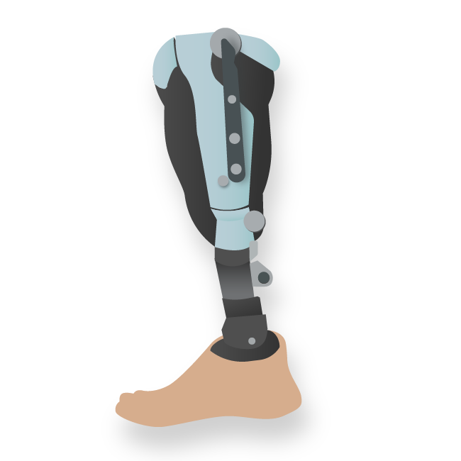
Computer access aids
These help people access and use computers.
Examples include: light pointers, modified or alternate keyboards, voice-to-text software, switches activated by pressure/sound/voice, touch screens, special software, and headsticks.
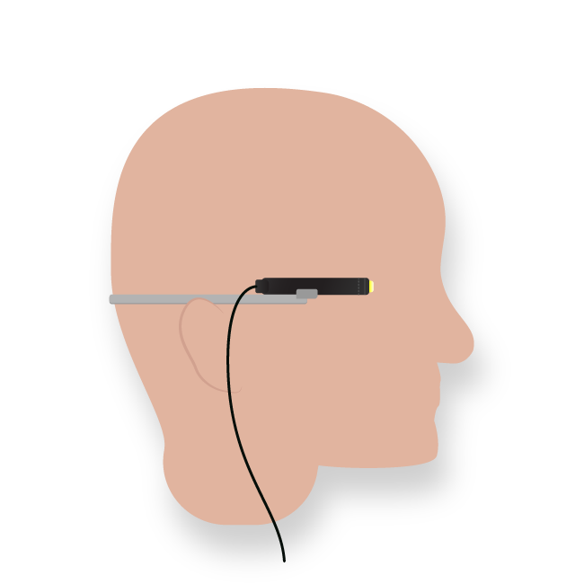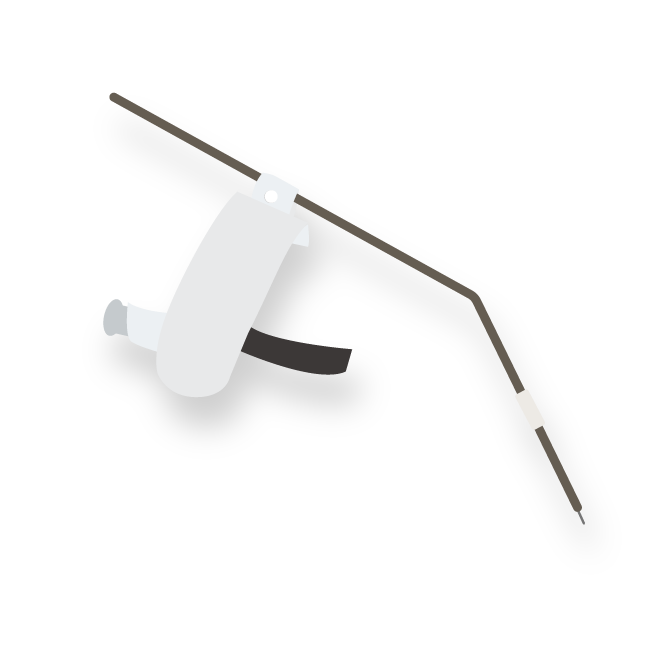
Environmental control systems
These are systems that help people control switches for various appliances.
Examples include: telephones and TVs activated by pressure, eyebrow movements, or breath.
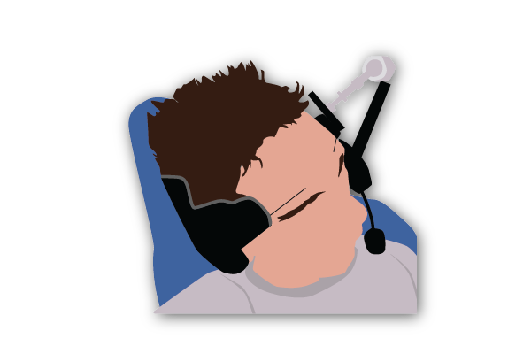